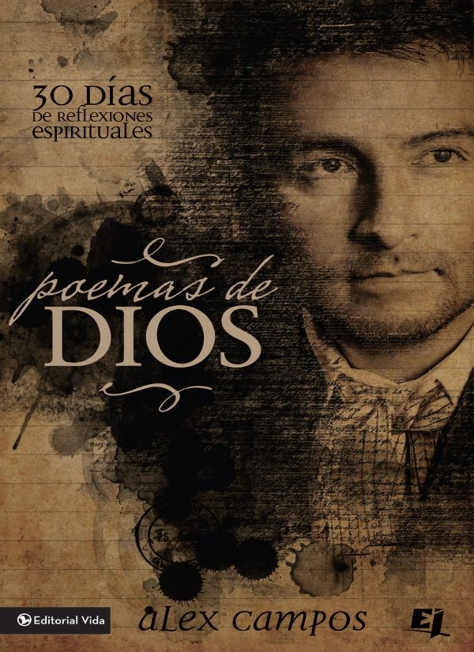

Año: 2008
Su video libro “Del llanto a la sonrisa”; fue una producción realizada para dar a conocer
mucho más sobre su vida. En él se encuentran confesiones, entrevistas y un testimonio poderoso, que bendecirá la vida de sus lectores.
Alex campo
Año: 2018
“Enséñame A Amar” es un devocional para Matrimonios, un libro de Coautoría con su
esposa, en el cual Alex y Nathalia comparten los desafíos, las luchas y las alegrías que han sido parte de su propio matrimonio.

Alex campo
Año: 2014
Su segundo libro titulado “Poemas de Dios” fue lanzado en abril de 2014. El autor explica según él como es la adoración genuina de todos los días en un cristiano que verdaderamente ama a Dios.